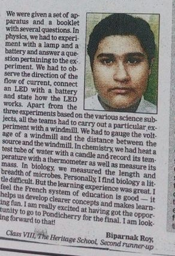
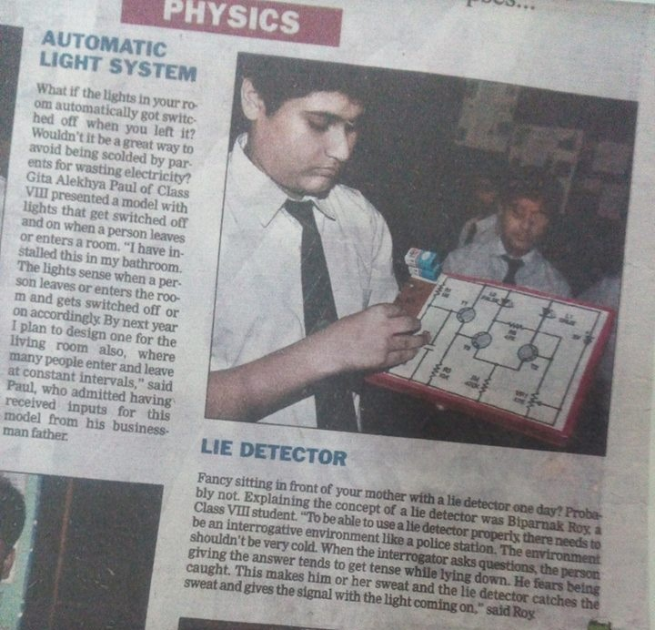
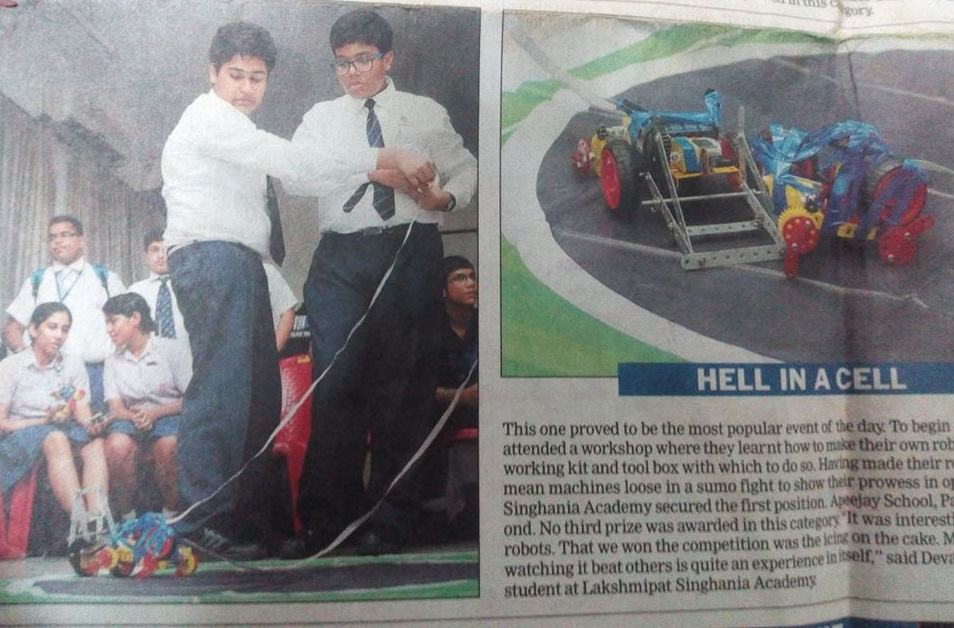
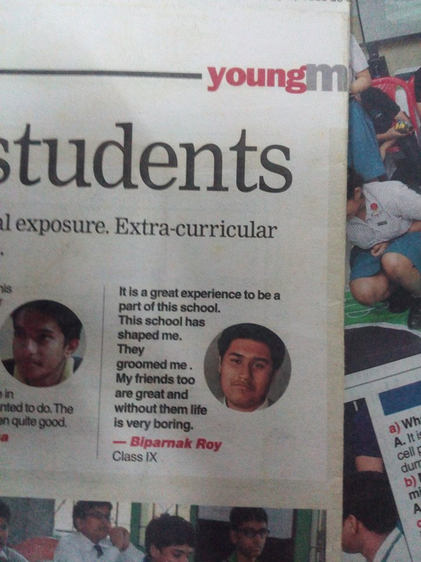
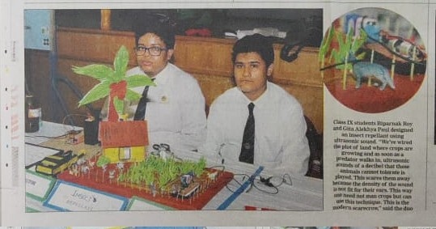
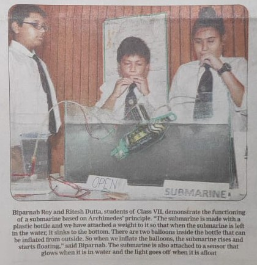
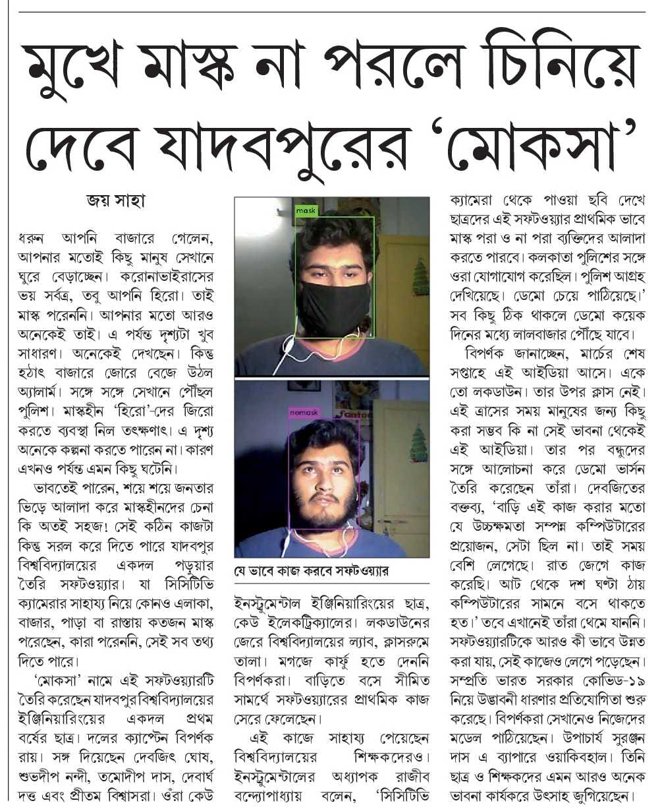

Biparnak Roy
Ph.no:(+91)9775588256
About me:
I am a first year student at Jadavpur University. I am currently persuing bachelor's in enginnering from
Instrumentation and electronics branch. I am 19 years old and I am very passionated about technology. From a
very early age I was very interested in circuits and robotics. I made my first projects a LED flasher using
555
timer when I was in 8th grade. From then on I made a Lie dector and Heart rate Monitor. I also made an
Automated
Irrigation System. Now comming to programing the first language I learned was HTML is school when I was in 8th
grade. Then in 9th grade i took up computer application where I learned Java which I continued to learn till
12th grade. There were many other languages that I self learned as much as I could. Another experience worth
sharing is National Robotics Championship where I had participated when I was in 9th. It is there I was
introduced to robotics and arudino. Beside these I love drawing and pottery. Lately I have also developed an
interest for phtography. Here are the details about me.
| Technical skills: | C, C++, Java, Python, HTML, CSS, Java Script (Intermediate), Arduino, P5.js, PCB design. |
|---|---|
| Language: | fluent: English, Hindi, Bengali Conversational ability: German. |
| Art Technology: | Coral draw, Adobe Photoshop. |
| Interest: | Pottery, art, photography, circuit design & robotics, Riffle Shooting, poetry & elocution |
Work Experiences:
Ideal Mission School
| Associate Guest Lecturer | Kolkata, India (Summer 2018) |
|---|---|
|
Uhinese Shri Shikshayatan
[ N.G.O. Producing Jute handicrafts]
| Junior Sales Associate | Behampore, West Bengal, India (2014-15) |
|---|---|
|
Competitions and Personal Projects:
| Microsoft Technology Associate: 98:381(python cerficitation) | (2019) |
|---|---|
|
| National Robotics Championship [Organized by IIT Bombay] | (2014) |
|---|---|
|
| IIT JEE Video Lectures | (2018) |
|---|---|
|
| Deutsch Camp [organised by Maxmullar Bhavan] | (2013) |
|---|---|
|
| Automatic Irrigation System & chemical less pest repellent | (2014) |
|---|---|
|
News Features:








Education:
Jadavpur University |
(2019-Present) |
|---|---|
|
The Heritage School |
(2006-2018) |
|---|---|
|